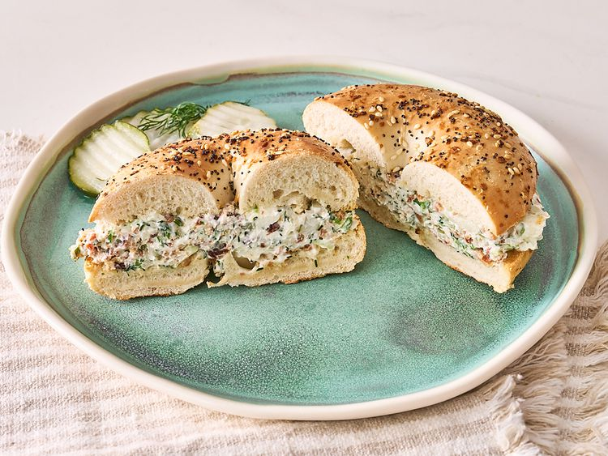

Pickle Bacon Chopped Bagels

A delicious sandwhich your kids would love
Ingrediants
- 3 ounces softened cream cheese
- 1/3 cup dill pickle slices
- 2 teaspoons pickle brine from the jar
- 2 green onions, cut into 3-inch pieces
- 4 slices cooked bacon
- 4 dill sprigs
- 2 everything bagels, sliced in half and toasted
Steps
- Place cream cheese onto a cutting obard. Top cream cheese with pickles, bring, bacon
, green onions, and dill. Chop all of the ingredients together and mix until well combined.
-
Divide mixture onto the bottom halves of bagels; place top halves on. Cut in half and serve immediately.
Return Home